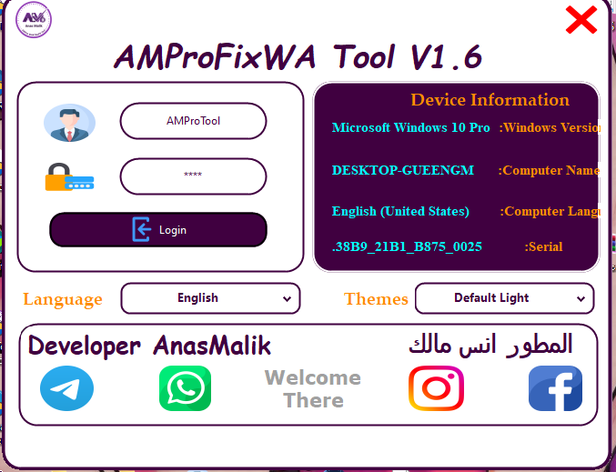
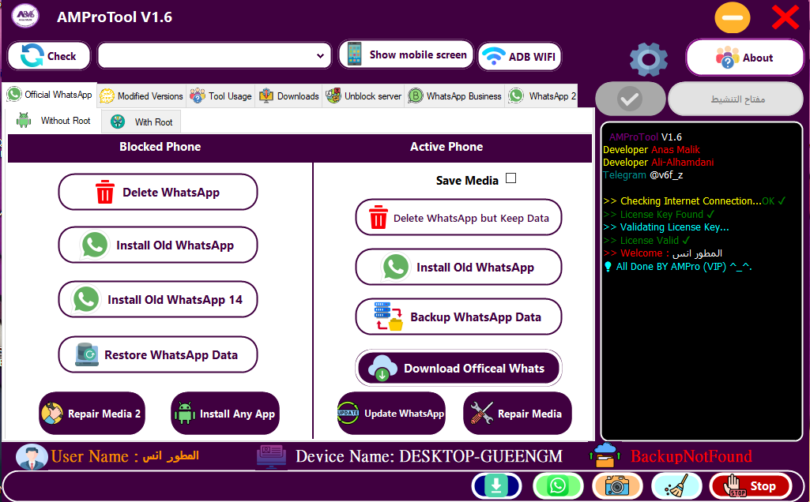
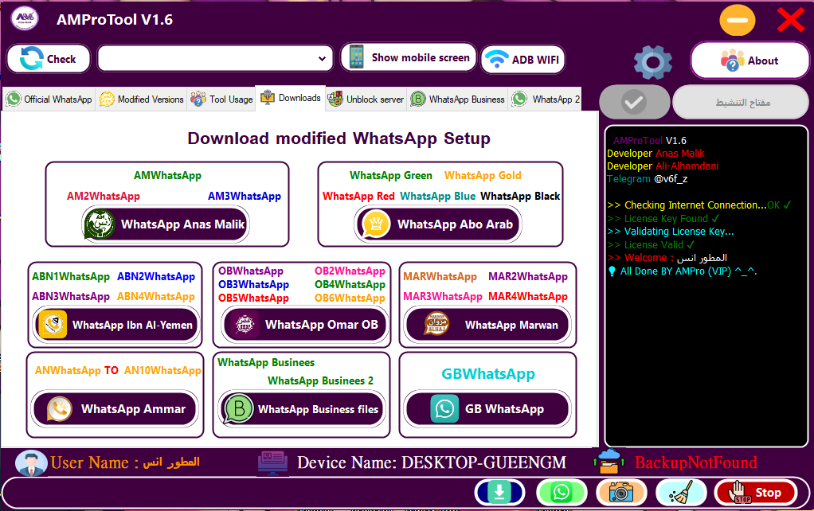
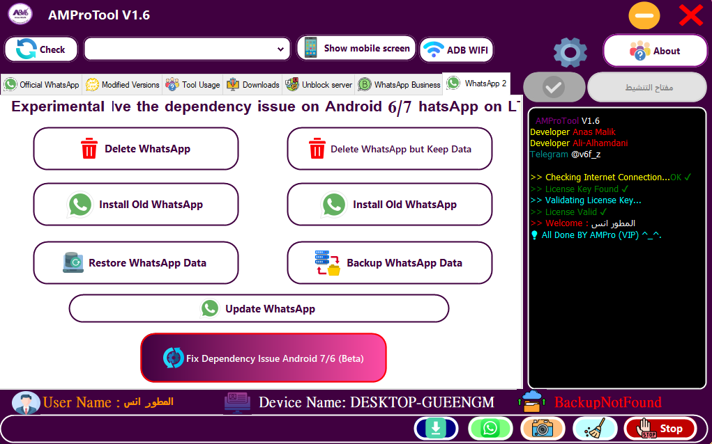

خفيفة، سريعة، وآمنة
تم تصميم الأداة لتمنحك أداء مذهل، ودعم كامل لأوامر ADB مع واجهة أنيقة وسهلة الاستخدام.
واجهة سهلة — دعم شامل — تحديثات مستمرة
الصور أعلاه توضح واجهة الأداة وإصداراتها المختلفة.